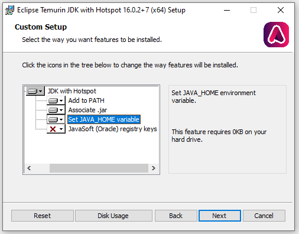
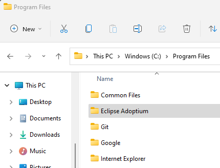

-
The installer may ask to “make changes to your device.” If it does, click
Yes.
-
Make sure to set the JAVA_HOME variable by clicking the
dropdown and selecting the first option as shown in blue below.

-
This is the folder area to find where the JDK was installed: “Eclipse Adoptium”

If the installation succeeds, then…nothing happens. Don’t
worry! If you didn’t get any errors, it probably worked — and if you find out
later on that it didn’t, ask for help and we’ll fix it together.
⚠️ CAUTION: if you have
installed previous version(s) of Java, then after installing
Java, please follow these instructions to remove configuration for older
versions of Java:
-
Open up Powershell by typing Windows and then Powershell (FIXME isn't Win-R
the key to launch PS? )
-
In Powershell, enter
cd ~ and hit enter then type
explorer . and hit enter.
- Delete the hidden folder
.gradle .
- Restart your computer.
Now you have a Java compiler. Next we'll install an
IDE
to edit and work with Java code.